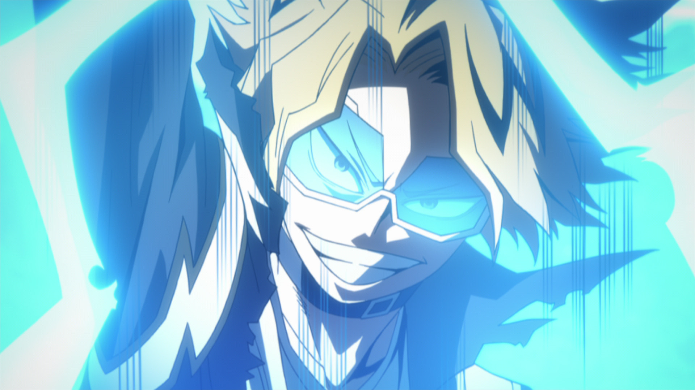
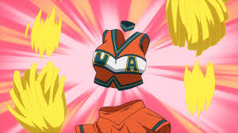

Izuku Midoriya
Surnommé "Deku", personnage principale de la série, possèdant le One for All.
Un pouvoir venant de son professeur mais aussi le Number ONE héro.
Katsuki Bakugo
Surnommé "Dynamight", possèdant l'alter explosion. Son pouvoir permet de
transformé la sueur de l'utilisateur, en petites explosions. Grand admirateur
de AllMight.
Todoroki Shoto
Surnommé "Shoto", possèdant deux alters (feu, glace). Fils d'un super-héro
qui rivalise avec AllMight. Ayant un passer très dur, il renie son père et
aussi son pouvoir du feu.
Ochaco Uraraka
Surnommé "Uravity", possèdant un alter qui permet d'annuler la gravité sur tout
ce qu'elle touche. C'est une des camarades les plus proche de Deku.
Tenya Iida
Surnommé "Ingenium", Cadet de la famille, petit frère d'un héros au même surnom,
il décide de reprendre la relève et continue l'aventure de son frère. Son pouvoir Engine,
il possède des pots d'échappement qui permettent d'aller à une vitesse folle.
Kirishima Eijiro
Surnommé "Red Riot", Il possède le pouvoir de durcissement, son corps peu durcire pour devenir
tel une pièrre. C'est le meilleur ami de Bakugo.
Tokoyami Fumikage
Surnommé "Tsukuyomi", il possède le pourvoir de Dark Shadow, c'est un monstre en lui qui se
nourri des ténèbres, qu'il contrôle en lui donnant des ordres.
Ashido Mina
Surnommé "Pinky", Mina créer un liquide corrosif à partir de sa peau (l'acide) étant naturellement
résistante à l'acide qu'elle produit.
Mineta Minoru
Surnommé "Grape Juice", son alter permet de prélever des "balles" remplaçant ses cheuveux afin
de les coller sur une surfaces, un objet ou une personne. En fonction de l'état de santé de Mineta
ces balles peuvent rester collantes toute une journée.

Kaminari Denki
Surnommé "Chargéclair", son alter permet de stocker de l'électricité dans son corps afin de la
relâcher par la suite. Décharge universelle 1 300 000 Volts.

Jiro Kyoka
Surnommé "Earphone Jack", Grâce à des prises jack sur ces oreilles Jiro, peut entendre des
fréquences inaudibles pour la plupart des êtres humains, elle peut amplifier la fréquence de battement
de son coeur pour assourdir des hordes ennemis.
Yaoyorozu Momo
Surnommé "Creaty", L'alter de création permet à Momo de matérialiser différents objets auquels elle pense,
tel que des armes et des outils, et ceci de n'importe quelle partie de son corps.

Kagakure Toru
Surnommé "Invisible Girl", Son alter invisibilité, Toro est actuallement invisible depuis son jeune âge.
Aoyama Yuga
Surnommé "Can't stop twinkling", l'alter consiste à génére un laser provenant du nombril de l'utilisateur.
Asui Tsuyu
Surnommé "Froppy", L'alter permet de bénéficier des capacités d'une grenouille de taille humaine. L'alter
est extrêmement poluvalant et peut être utiliser de multiples façons.
Sero Hanta
Surnommé "Cellophane", son alter Ruban Adhésif permet d'éjecter une matière proche du ruban adhésif par des
excroissance se trouvant au niveau des coudes.
Ojiro Mashirao
Surnommé "Tail Man", Sa queue est musclée et furieusement commode, il peut l'utiliser comme un troisième bras
pour attraper des objets, se poser dessus ou même pour attaquer.
Sato Rikido
Surnommé "Sugar Man", son alter Sugar dope lui permet de quintupler sa force pour une courte période. Ainsi 10g
de sucre permet d'user de sa force durant 3 minute.